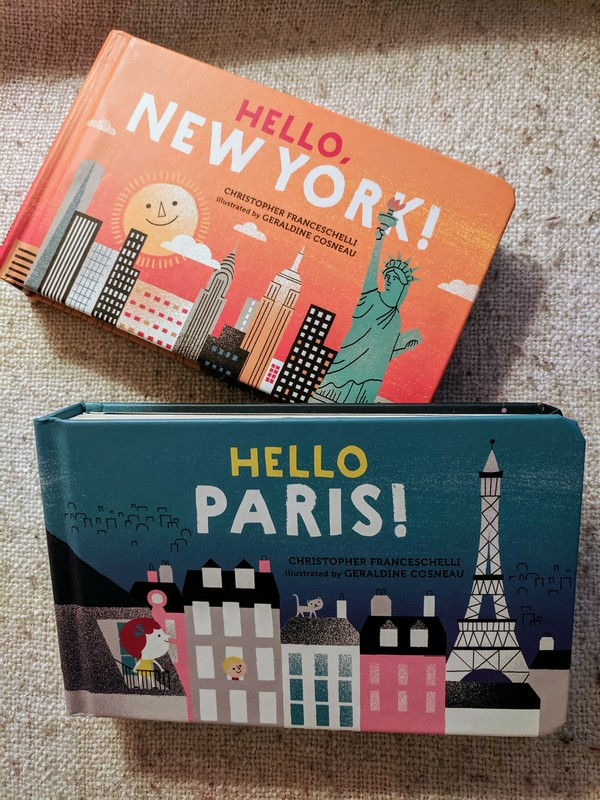
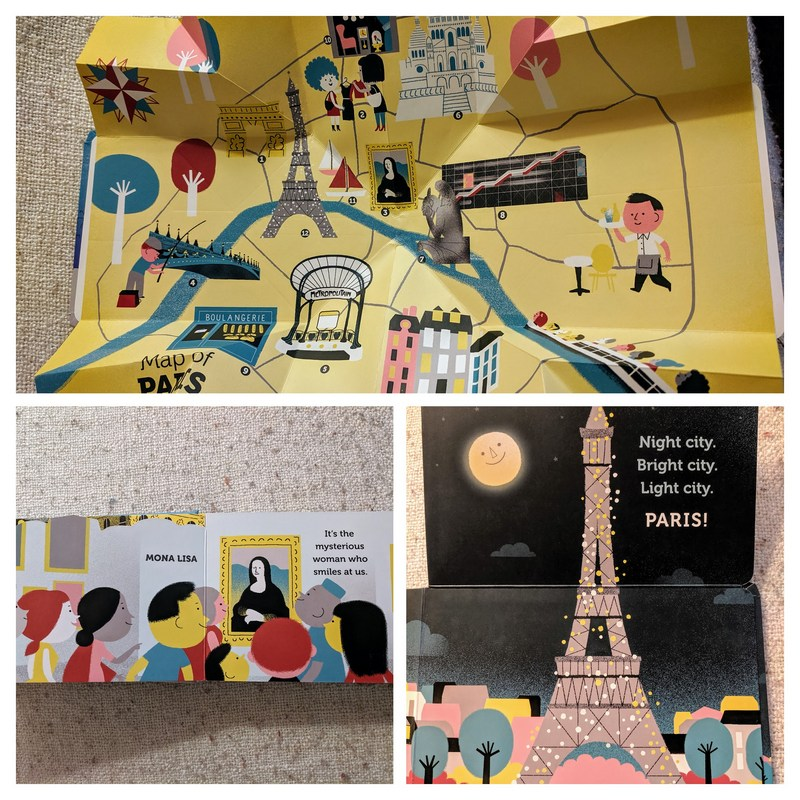

Dnes tu máme v literární rubrice tak trochu srdeční záležitost. Tato půvabně ilustrovaná knížka má totiž ještě sourozence Hello, New York! A právě ta mi přišla do rukou jako první - byl to dárek pro O., který mu děda koupil v New Yorku, když se brácha ženil. Dlouho u nás ležela bez povšimnutí, Olímu bylo sotva půl roku, a tak jsem si v ní listovala jen já. Někdy během letošního léta si ji ale začal sám brát, prohlížel si v ní auta a autobusy… no a v říjnu už uměl na mapě suverénně ukázat, kde je Socha svobody, Brooklynský most nebo Central park :-D Dnes je to jedna z našich nejčtenějších knížek a když teta Terezka objevila, že na Megaknihách mají k mání Hello Paris!, bylo jasné, že naše domácí knihovnička si žádá rozšíření :-D!

I pařížská verze drží stejný koncept - na začátku knihy naleznete přehlednou mapku s očíslovanými pamětihodnostmi, o nichž je dále na stránkách řeč. Mapa je z tenčího papíru, než zbytek knihy, ale u nás zatím přežila nenechavé dětské ruce bez natržení. A pak už následují jen překrásné ilustrace a stránky s efektními výkroji, které dělají z této dětské knížky takové malé umělecké dílo :-) Nechybí Vítězný oblouk, Louvre s Monou Lisou nebo Montmartre, ale mimo to je zde stejně jako u sestřičky o New Yorku třeba i stránka věnovaná speciálně metru. A to naše dítě, které má teď období aut, mašin a vůbec všeho, co jezdí, vždycky ocení :-D! No a na závěr veliká rozkládací Eiffelovka (analogicky s Freedom Tower u New Yorku).
Jen pro úplnost ještě dodávám, že kniha je v angličtině (o českém překladu nevím), ale na každé straně je stejně jen pár řádků textu a ilustrace zde jednoznačně hrají prim, takže to nepovažuji za žádný problém (spíš naopak).

Já jsem z Hello Paris! zcela nekriticky nadšená. Zkrátka je to jedna z těch dětských knížek, kterými s nadšením listuje i dospělý. Věřím, že se u nás doma bude těšit stejné oblibě jako Hello, New York! Musím říct, že mě bude stát HODNĚ přemáhání, schovávat Olímu tenhle poklad až do Štědrého dne :-D…